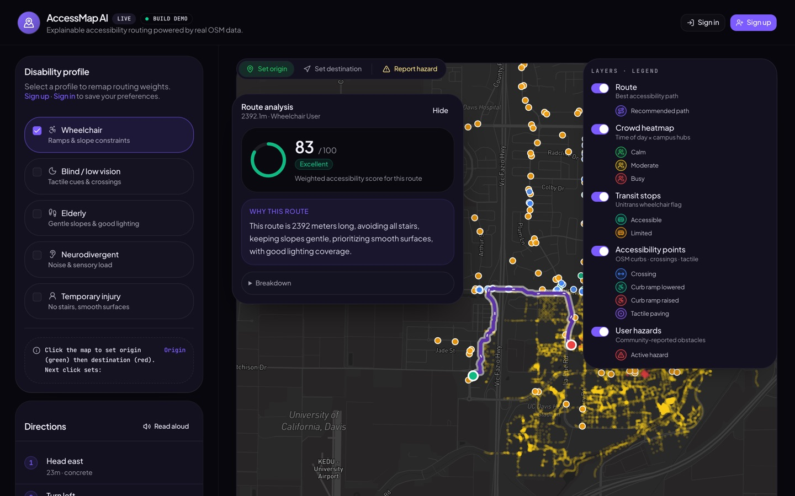

AccessMap AI: walking routes that fit how you get around

Most map apps give everyone the same route. AccessMap asks how you move first. A wheelchair user, a blind walker, someone on crutches and a neurodivergent student crossing Davis each get a different path, weighed by slope, surface, curb ramps, noise, crowds and lighting.
My part was the routing. I built the pipeline that turns OpenStreetMap and transit data into a graph of Davis, with spatial lookups so a route comes back in seconds, and wired it to the map front end.
Python · FastAPI · NetworkX · Next.js · TypeScript
Read the code on GitHub- 19,709
- nodes in the street graph
- 5
- accessibility profiles, and you can combine them
- 1,180
- infrastructure markers on the map
Does a language model know when it's wrong?
When GPT-2 answers a multiple-choice science question, it also says how sure it is. I wanted to know whether those numbers mean anything, and how the decoding settings change them. I ran 36 combinations of temperature, top-p and top-k on ARC-Easy and SciQ and measured accuracy, calibration and how varied the answers were.
The model was right 42% of the time and far more confident than that. Rescaling its confidence with a single temperature, fitted on 50 held-out questions, cut its calibration error on 100 others from 0.362 to 0.096, 73% lower, without changing a single answer.
Read the code and reportGPT-2 on ARC-Easy · lower is better
- Before
- After temperature scaling
Calibration error (ECE)
Brier score
A delivery platform for a working pharmacy
Since June I've been building the system BJRX uses to get prescriptions to patients' doors. I work across all of it, from the backend to the app in the driver's hand.
A delivery only counts if it really happened, so the driver app checks they're at the address and takes a photo and signature at every drop‑off. And because it's patient data, every change is kept in a record nobody can edit, and each pharmacy only ever sees its own.
The same backend now books vaccinations at three pharmacies. The code is private, so here's the shape of it instead.
The apps they use
Two more projects
LeaseLens: what Davis renters should know before they sign
With the AI Student Collective I led LeaseLens, which pulls permit records, code violations and reviews for 30+ Davis properties into one place you can ask questions of. Before any code, we interviewed 20 students and local renters about what they trust and what they don't.
Python · PostgreSQL + PostGIS · Supabase · Playwright
Code on GitHubL-Store: a column-store database, from scratch
For ECS 165A I helped build a database engine in Python: page ranges, base and tail pages, versioned records and merges, so writes stay cheap and older versions stay readable.
Python
Code on GitHubA bit about me
I'm a data science student at UC Davis with a minor in economics, graduating in June 2028. Most of what I know about building software I learned by shipping it: a hackathon weekend, a club project with real renters, a summer of production code.
- Languages
- Python, SQL, TypeScript, JavaScript, Swift, Java, R
- Building
- FastAPI, React, Next.js, SwiftUI, PostgreSQL, PostGIS, Supabase
- Data
- pandas, NumPy, scikit-learn, NetworkX, Playwright, Jupyter
- Coursework
- Data structures, algorithms, database systems, applied machine learning, statistical learning, regression